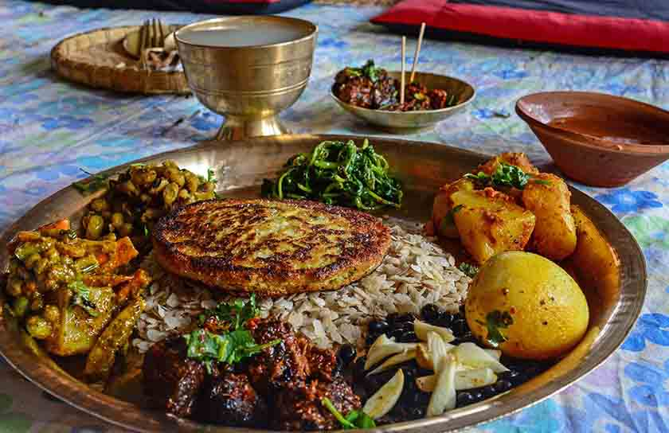
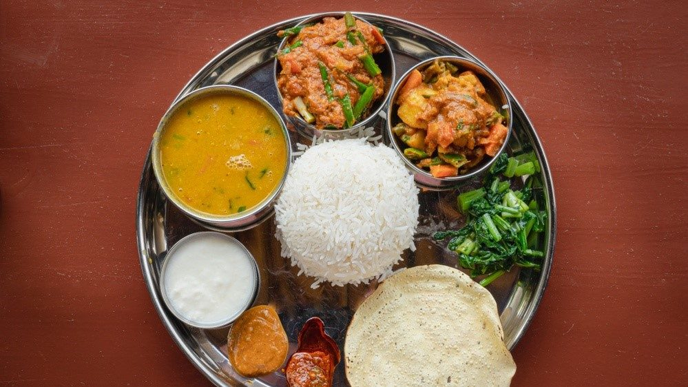
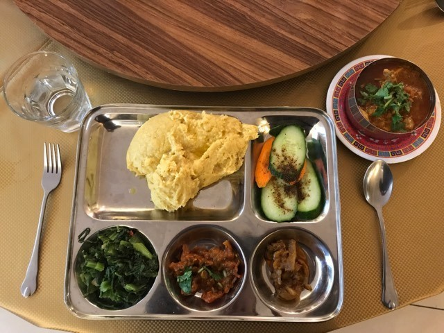
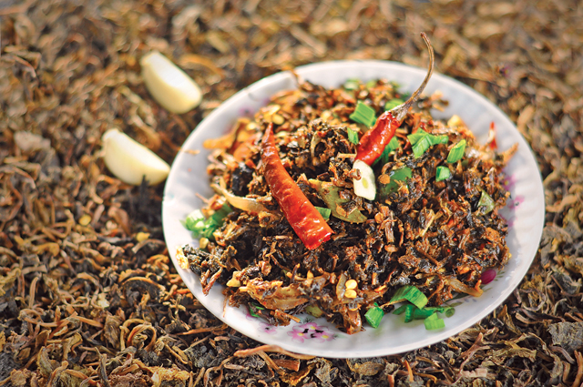
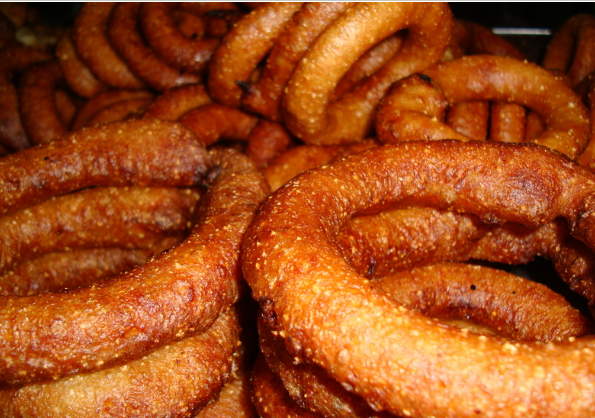

Nepali Dishes You Need to Try at Least Once
In Nepal, a wide range of cuisines are mainly based on ethnicity or based on region. However, every local dish represents ample room for cultural and geographic diversity. There are many dishes and traditional cuisine which someone must try if they are visiting Nepal for the first time.
Dal Bhat Tarkari
Dhindo is the food that can only be found in Nepal. It is prepared by gradually adding flour to boiling water while stirring. It is a staple meal in various parts of Nepal. The vessel of choice for making dhindo is phalame taphke (iron pan). A narrow iron spatula called a dabilo is used to stir the dhindo as it thickens.
Dhindo
Dhindo is the food that can only be found in Nepal. It is prepared by gradually adding flour to boiling water while stirring. It is a staple meal in various parts of Nepal. The vessel of choice for making dhindo is phalame taphke (iron pan). A narrow iron spatula called a dabilo is used to stir the dhindo as it thickens.
Gundruk
Gundruk is a leafy green vegetable that is fermented and popular in Nepal. Perhaps it is believed to be a national dish. Gundruk is a multi-legged plant of Rayo sag, mustard leaves, radish, etc. Dundruk is produce as a dry plant with dark brown characteristics. It’s a food that can either be served as a meal or as a lateral dish or as a soup.
Sel roti
Sel roti is kind of Nepal ‘s substitute to donut. Sel roti is also traditional food that has much less sweet compare to the donuts. Generally, it is deep-fried and round. They are usually considered as snacks, and it is found in the food streets of Nepal. However, it is generally made in Nepali homes, and it is prepared during celebrations and festivals, particularly in Maghe Sankranti and Tihar.
Yomari
Yomari is so unique that it has a festival called Yomari Pooja that is usually celebrated in December. This is the Newari festivals that mark the conclusion of the rice harvest, and on that day they eat sweet yomari. Yomari is like pointed fish dumplings in shape and looks, which are actually made of rice meal and either filled with a mixture of sweet ingredients.